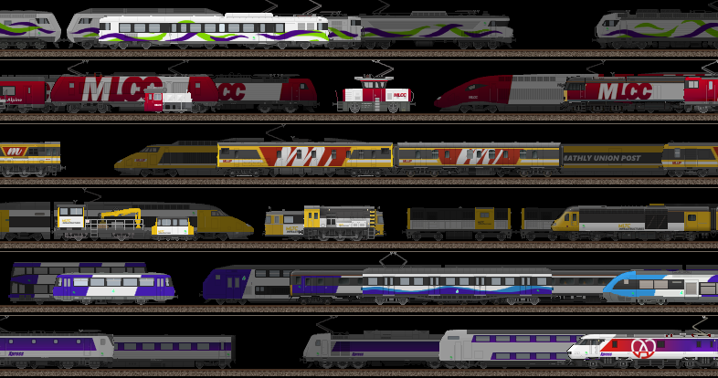

Projet Principal
MathLy Travel Company
Le voyage au fil des rails, réinventé.
800+
Dessins créés
2020
Année de création
20+
Identités visuelles
Le Projet
La MathLy Travel Company (MLTC) est née en 2020 dans le jeu Train Empire. Ce qui a commencé comme un simple projet de jeu s'est transformé en un univers créatif complet avec son propre worldbuilding, son histoire détaillée et des centaines de créations visuelles.
L'univers MLTC se situe dans une Europe alternative où le réseau ferroviaire s'est développé différemment, donnant naissance à des compagnies uniques comme la MLTC, héritière de plusieurs opérateurs historiques fusionnés en 1999.

Les services et autres compagnies
Services Voyageurs
- TransRegio - Services régionaux rapides
- Xpress - Trains rapides longue distance
- HSX - Trains à grande vitesse
- Vivarail - Grandes lignes internationales
- Nocrail - Trains de nuit
Services Urbains
- Urbahn - RER des métropoles allemandes
- Intracity - Navettes urbaines
Infra, Fret & Poste
- MLTC Infrastructures - Gestionnaire du réseau
- MLCC - Transport de marchandises
- MLUP - Service postal et acheminement du courrier par rail
Compagnies historiques
- CCFM - Compagnie des Chemins de Fer du Mathlyens (MSVM aux Pays-Bas)
- WME - Westdeutsche Mathly Eisenbahn
- MSER - Mathly Southern England Railways
Opérateurs privés
- SanGo! - Opérateur à bas coût, liaisons transversales inter-métropoles du sud
- CFP - Chemins de Fer des Pyrénées, opérateur régional semi-public du massif pyrénéen
Dernière mise à jour : 6 avril 2026